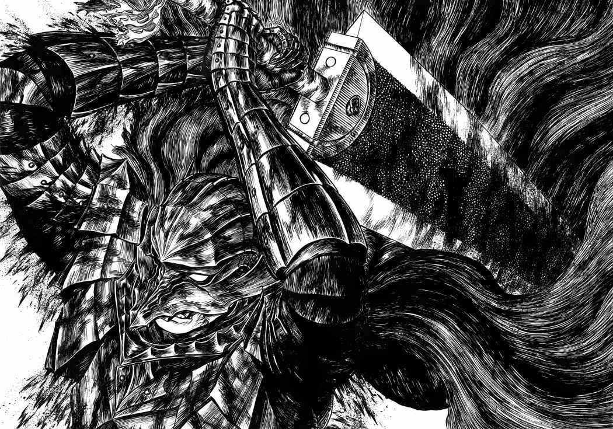
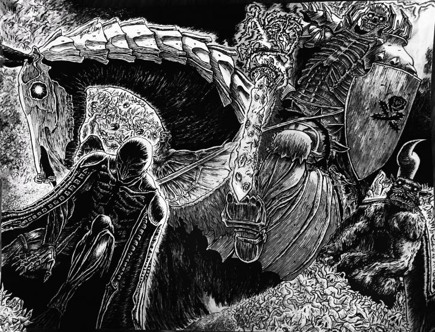
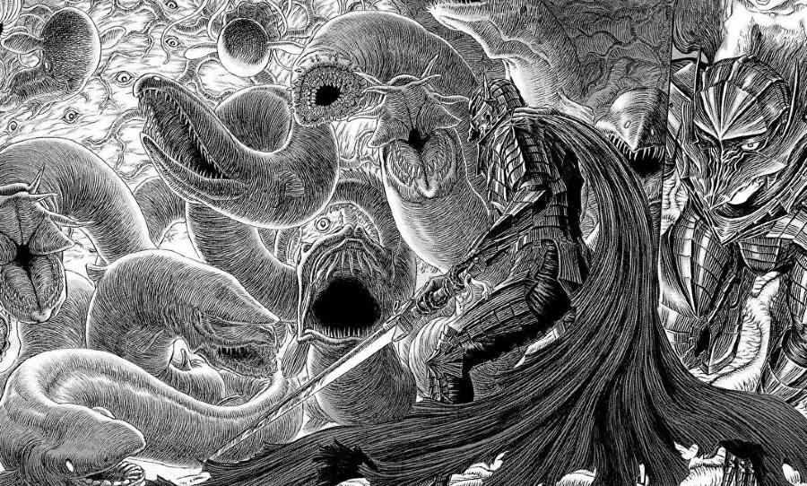

Mi asombroso primer título
Presentación
Hola, me llamo Marco Angelo Brunetti. Soy estudiante de la UTN(Universidad Tecnológica Nacional) y esta es mi sorprendente primer descripción.
Esto es un trabajo para Laboratorio de Computación II.
Páginas Favoritas
CVG De La UTN
Youtube
Stackoverflow
Bandas Favoritas
Black Sabbath
Avenged Sevenfold
DIO
Rainbow
Metallica
Pantera
Canales De Youtube Que Utilizo Para Estudiar
Cursos de Python
Matemática
Imágenes
Imágenes de mi manga favorito Berserk


